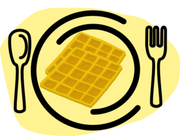

Blueberry Waffle
The Ingredients You'll Need
- 3 egg yolks, beaten
- 1 2/3 cups milk
- 2 cups all-purpose flour
- 2 1/4 teaspoons baking powder
- 1/2 teaspoon salt
- 1/4 cup melted butter
- 3 egg whites, stiffly beaten
- 2/3 cup blueberries
- 1 1/2 cups blueberries
- 3 tablespoons honey
- 1/2 cup orange juice
- 1 tablespoon cornstarch
Instructions
In a medium bowl, whisk together egg yolks and milk. Stir in flour, baking powder and salt. Stir in butter, and set mixture aside for about 30 minutes.
Preheat a lightly greased waffle iron.
Fold egg whites and 2/3 cup blueberries into the mixture. Scoop portions of the mixture into the prepared waffle iron, and cook until golden brown.
To prepare the sauce, in a medium saucepan over medium heat, mix 1 1/2 cups blueberries, honey and 1/4 cup orange juice. Bring to a boil. Mix remaining orange juice and cornstarch in a small bowl, and stir into the blueberry mixture. Stir constantly until thickened. Serve warm over waffles.